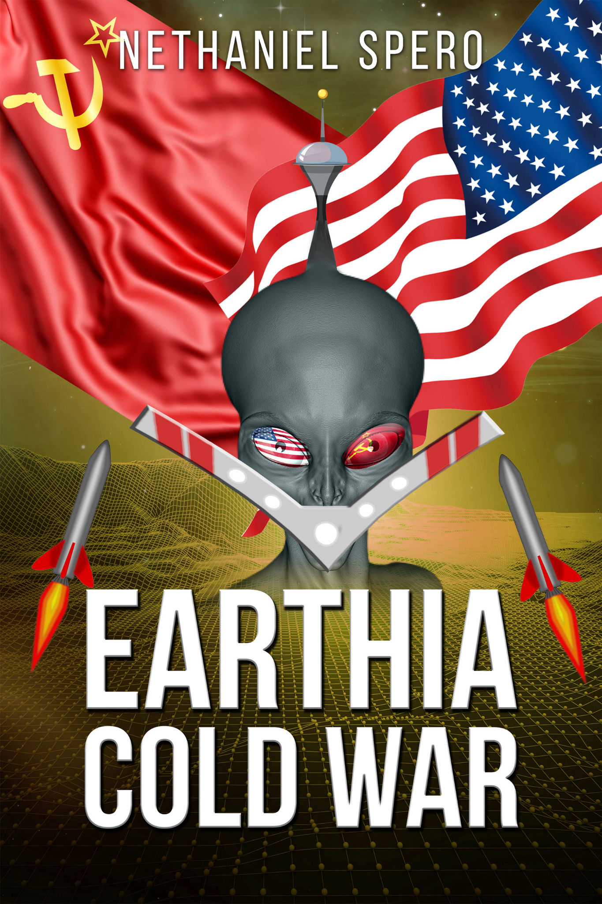

CLASSIFIED // 1962 // FIRST CONTACT
What if first contact happened at the height of the Cold War?
1962. An American aircraft carrier recovers a mysterious craft from the Pacific Ocean. What lies inside could change the balance of power between the United States and the Soviet Union.

About the Book
One discovery could change the balance of the Cold War forever.
1962. The Cold War has brought the world to the brink of catastrophe.
When an American aircraft carrier recovers a mysterious craft from the Pacific Ocean, its discovery is immediately classified and transported to Area 51.
Inside is Yono, an intelligent alien from Mars whose knowledge surpasses anything humanity has ever known. If the United States can unlock his secrets, the balance of global power may shift forever.
As American advances begin to alarm the Soviet Union, suspicion turns into fear. With both superpowers edging closer to nuclear conflict, one extraordinary discovery may determine the fate of the world.
Earthia Cold War is an alternate-history thriller blending Cold War intrigue, political suspense, military strategy, and intelligent first-contact science fiction.
“Yono's world, though born from the fantastic, feels as solid as the earth beneath our feet.”
— The Historical Fiction Company
Read the full review →Watch the official book trailer
If the embedded player is blocked by your browser or by a local preview, watch the trailer directly on YouTube →
Enter the world of Earthia Cold War.
Available in Kindle and paperback editions.
About Nethaniel Spero
Nethaniel Spero is an author with a lifelong passion for storytelling and history. He has been writing stories since childhood and has published numerous works online over the years.
His fascination with history—particularly the events, conflicts, and unanswered “what if?” questions of the past—helped inspire Earthia Cold War, an alternate-history thriller that combines a fictional first-contact scenario with the political and military tensions of the Cold War.
Before turning his attention to software testing, Nethaniel worked as a content writer in digital marketing and trained as a practical mechanical technician. His varied background, combined with his interest in history and speculative “what if?” scenarios, influences his approach to creating stories in which extraordinary events collide with the real world.
Earthia Cold War is his published novel.
Connect with the Author
Follow Nethaniel Spero on Facebook for news, updates, and information about Earthia Cold War.
Follow on Facebook